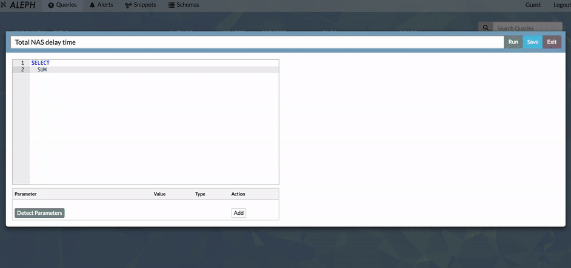

Introducing Aleph
Aleph is a Redshift data analysis application. At its most basic, it allows users to write SQL and get results. On top of that we have built a rich suite of features focused on helping organizations develop and accrete data querying techniques; its ultimate aim is to serve as a repository of institutional knowledge.
The quickest way to try Aleph is to hit up the Demo! Also, checkout Github for instructions on how to contribute and install.
SQL Authoring Tools
Aleph includes a SQL editor with an autocomplete that is aware of schema information (table and column names) as well as common Redshift SQL syntax and keywords. Parameters and SQL snippets allow expressive templatized queries, allowing expert users to create frameworks for others.
Track and Share Analyses
Query versions are maintained in Git, leveraging the Github UI to document and history of SQL changes. Comments allow people to leave notes to each other.
Manage Access
Access control granular on the table level allow teams to do research in their own domain, ensuring that sensitive information is protected
And more!
- Run, save, and share queries and results
- Search and document schema
- Business Intelligence Alerts
- Schema and SQL syntax aware SQL editor autocomplete
- Query parameterization
- Query versions maintained on git and commentable
- Snippets
- Rich, Customizable C3 Visualizations
- Data Access Control
Support & Contact
Ask questions and discuss stuff in aleph-user. We only bite a little!